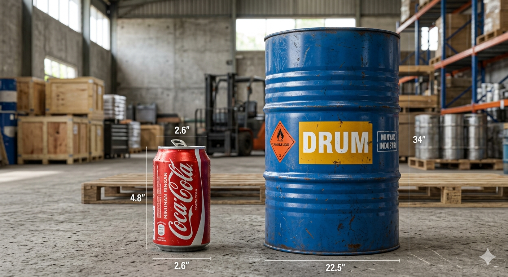

Putar tabung pakai mouse/jari!
Tabung adalah kaleng bulat panjang yang punya:
2 lingkaran sama besar
1 bidang lengkung melingkar
Setengah diameter lingkaran
Panjang tabung vertikal
Langkah mudah:
Contoh: r=7, t=10 (π=3,14)
L = 2×3,14×7(7+10) = 658 cm²
Langkah mudah:
Contoh: r=5, t=12 (π=3,14)
V = 3,14×25×12 = 942 cm³
Langkah mudah:
Contoh: r=10 (π=3,14)
LA = 3,14×100 = 314 cm²
Langkah mudah:
Contoh: r=7 (π=3,14)
KA = 2×3,14×7 = 44 cm
Kaleng cat jari-jari 15 cm, tinggi 30 cm. Hitung luas seluruh permukaan kaleng!
Rumus: L = 2πr(r + t) (π=3,14)Botol air jari-jari 3 cm, tinggi 20 cm. Berapa liter air yang muat? (π=3,14)
Rumus: V = πr²t (1 liter = 1000 cm³)Kaleng permen r=5 cm, t=12 cm. Berapa luas alas kaleng? (π=3,14)
Rumus: LA = πr²Tabung r=8 cm. Berapa keliling lingkaran alasnya? (π=3,14)
Rumus: KA = 2πrDrum besar r=50 cm, t=80 cm. Berapa liter air yang muat? (π=3,14)
V = πr²t (1 liter = 1000 cm³)Banyak benda sehari-hari berbentuk tabung, seperti kaleng, botol, drum, dan pipa. Tabung efisien untuk menyimpan cairan!
Dengan rumus tabung, kita bisa menghitung:

Kaleng sarden bentuk tabung. Kita hitung kebutuhan: